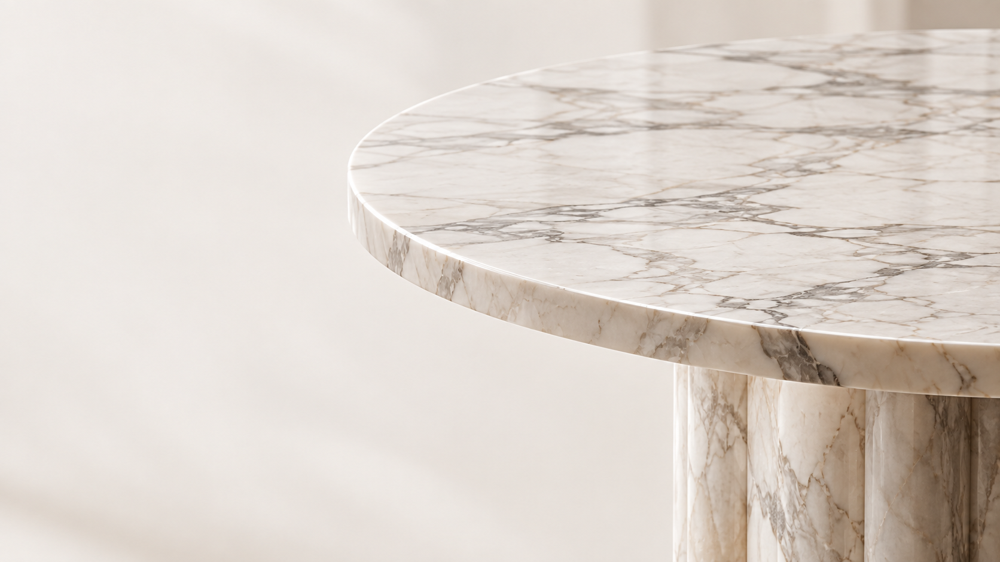
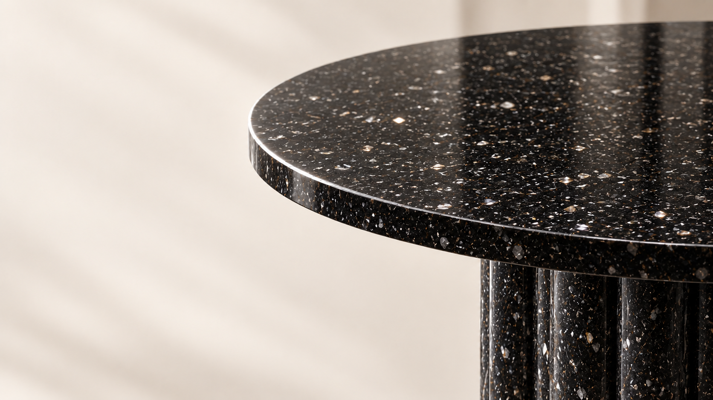
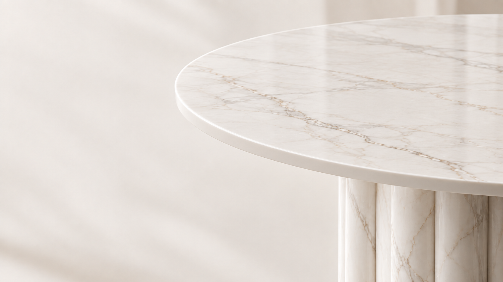
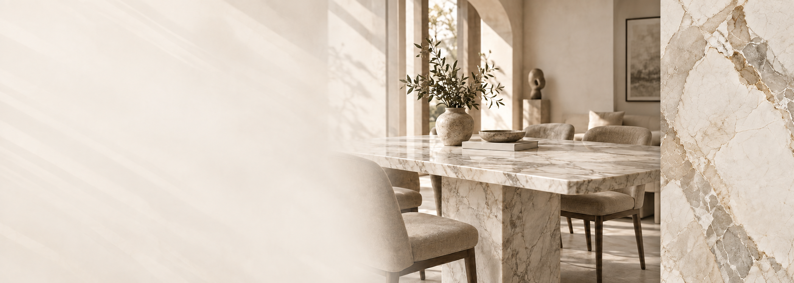
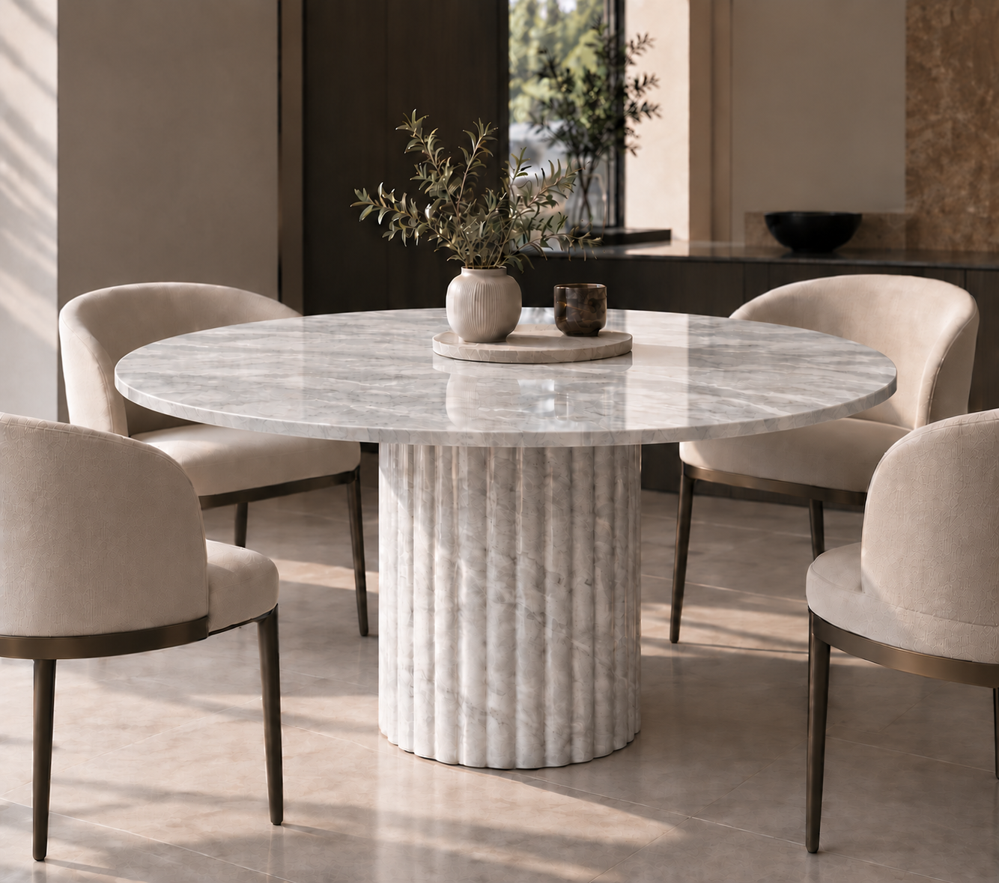
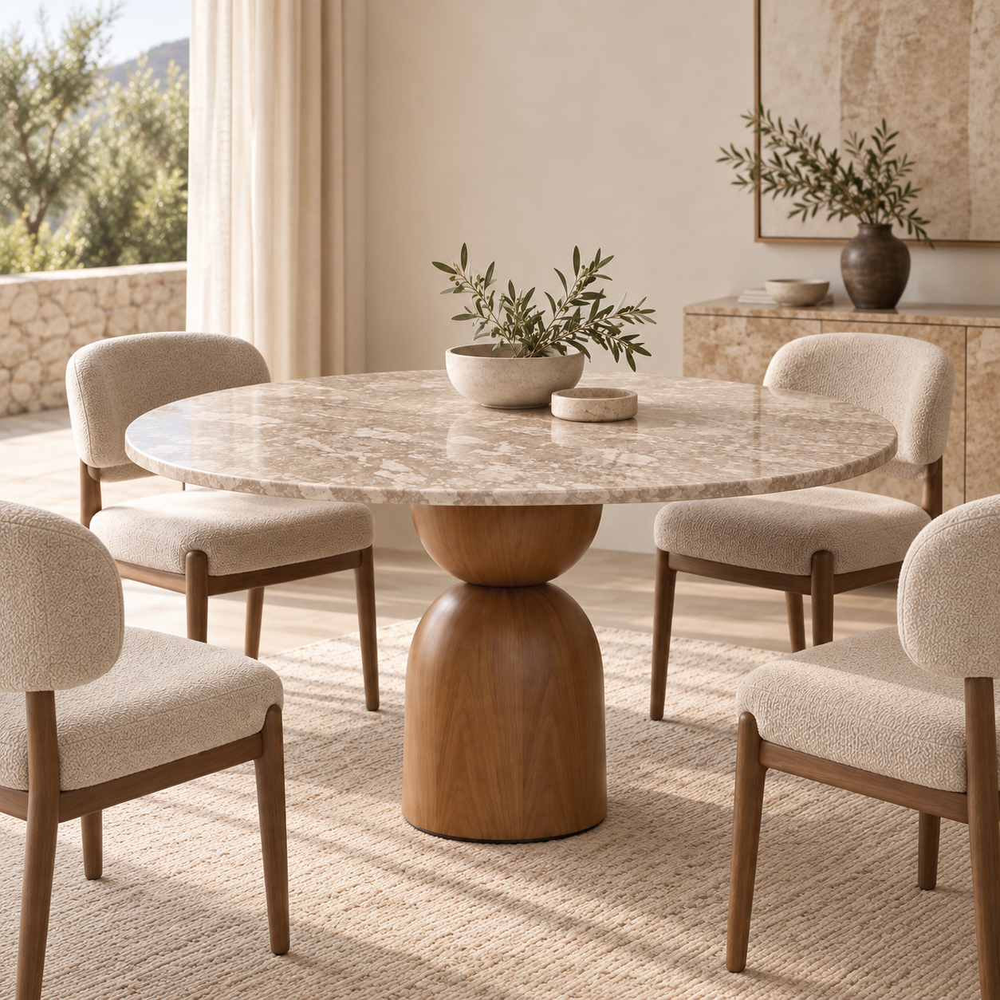
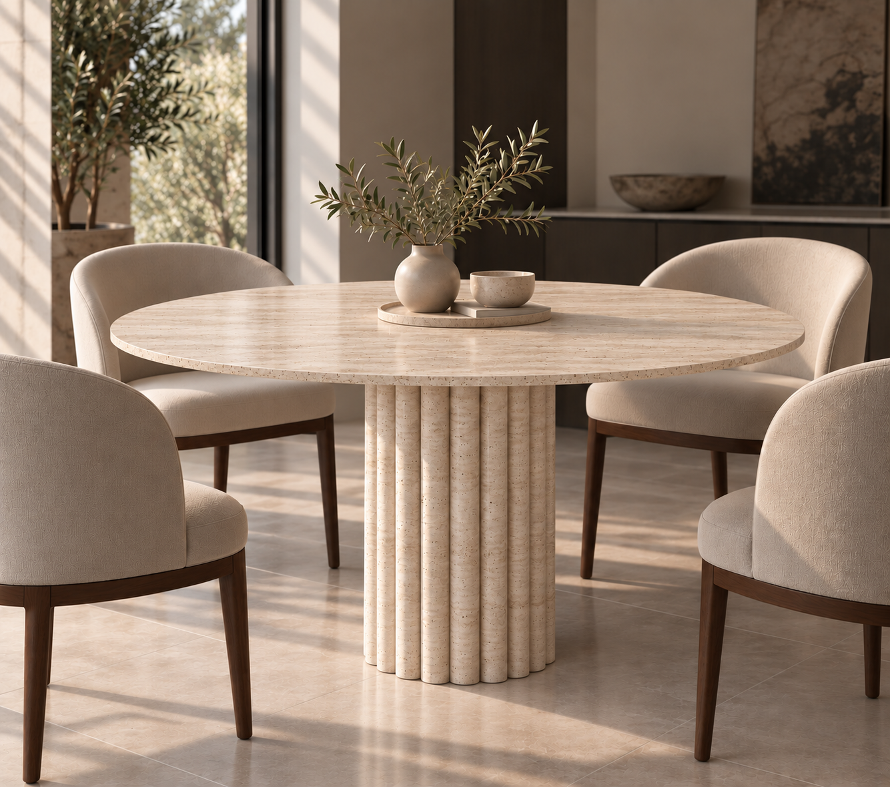
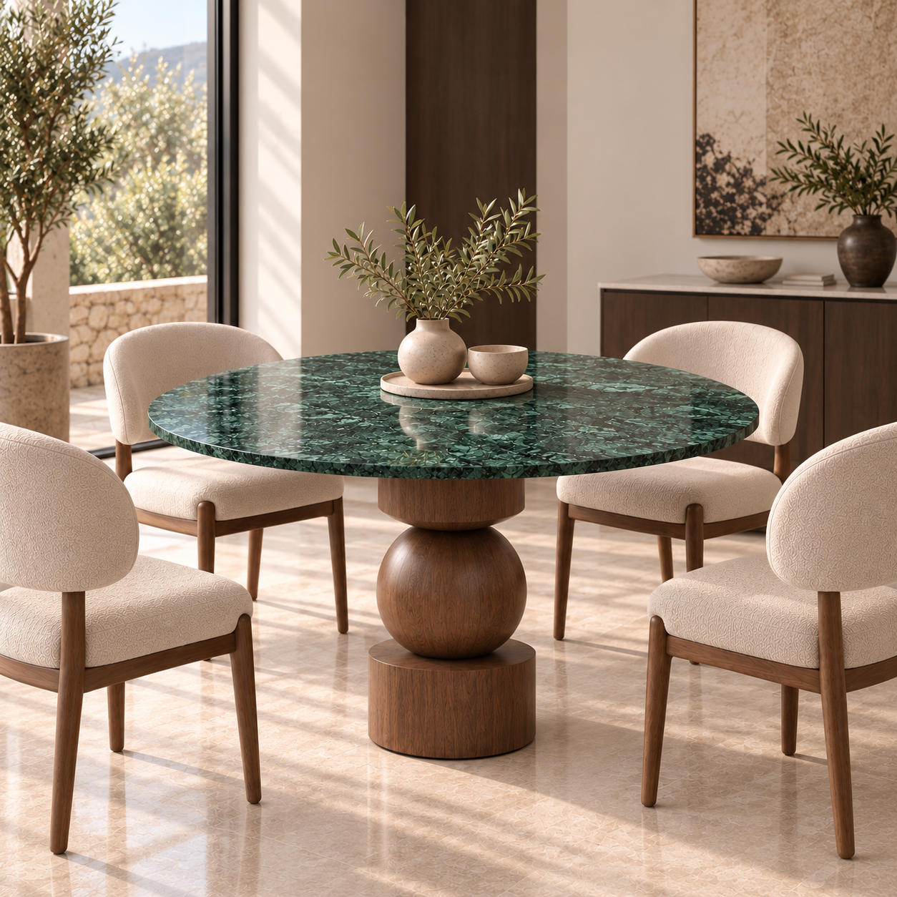
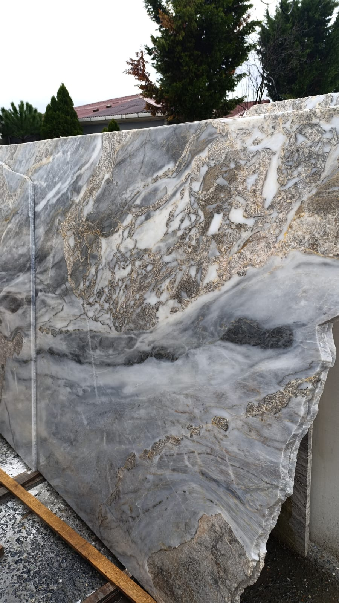

POSEL MADENCİLİK
Mermer, granit ve porselen yüzeyleri modern tasarım anlayışıyla buluşturuyoruz.
Mermer
Masalar
➜

Granit
Masalar
➜

Porselen
Masalar
➜


Masa Fiyatını
Saniyeler İçinde Hesapla
Malzeme, ölçü, şekil ve ayak seçeneklerini belirleyin. Tahmini fiyatınızı anında görün.
Hemen Hesapla ➜Öne Çıkan Ürünler

Alba Mermer Masa
100 cm çap • Muğla Beyazı • Mermer Ayak 49.900₺
Terra Mermer Masa
100 cm çap • Akhisar Beji • Ahşap Ayak 39.900₺
Rome Traverten Masa
100 cm çap • Traverten • Traverten Ayak 44.900₺
Guatemala Mermer Masa
100cm çap • Verde Guatemala • Ahşap Ayak 44.900₺
Gerçek taş, kendine özgü desenTaşı yalnızca seçmiyor,
masanıza uyarlıyoruz.
Her projede taşın doğal karakterini, kullanılacağı alanı ve seçilen ölçüyü birlikte değerlendiriyoruz. Böylece görünüm kadar günlük kullanıma da odaklanan bir masa ortaya çıkıyor.
Malzemeyi tanıyın
Doğal taşın damar ve ton farklılıklarını, porselenin desen yapısını seçim öncesinde açıkça anlatıyoruz.
Ölçünüze göre seçin
Tabla ölçüsü, şekli ve ayak alternatiflerini kullanım alanınıza göre birlikte değerlendirebilirsiniz.
Sipariş desteği alın
Ürün seçiminden teslimat planına kadar ihtiyaç duyduğunuz noktada doğrudan iletişim kurabilirsiniz.
Ölçüye Göre Seçim
Alanınıza uygun tabla ve ayak.
Gerçek Malzeme Bilgisi
Taşın doğal karakterini tanıyın.
Doğrudan Destek
Seçimden teslimat planına kadar.